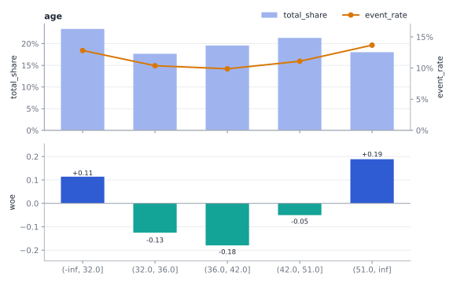

Credit risk modeling with pandas#
kivi is a pandas toolkit for credit risk and financial modeling. It computes point-in-time features from transactions and repayment histories, profiles the candidate variables, bins them and groups their categories, measures how well each bin separates a binary outcome such as default, selects the variables and fits a logistic scorecard or weighs the factors of an expert scorecard, infers the outcomes of rejected applicants, scales the model to points, evaluates it and calibrates it on a master scale and to a long-run average default rate, estimates the loss given default and the exposure at default from workouts and credit lines, prices the cut-offs by their expected loss and profit, and measures and searches for the policy rules that decline applicants whatever their score. Once the model is live, it monitors the score period by period, validates the model with the tests that supervisors ask of internal rating models, computes the regulatory capital of its PDs, follows how the approved loans repay and perform, and estimates their lifetime PDs and expected credit loss under IFRS 9. Tables come back as pandas DataFrames with one row per bin, grade, cut-off, rule, period or variable, and kivi.plotting draws them as charts.
python -m pip install kivi
At a glance#
import pandas as pd
from kivi.binning import bin_edges
from kivi.datasets import load_bank
from kivi.stability import psi_table
from kivi.woe import woe_table
data = load_bank()
reference, current = data.iloc[:3000], data.iloc[3000:]
edges = bin_edges(reference["age"], bins=5)
before = pd.cut(reference["age"], edges)
after = pd.cut(current["age"], edges)
evidence = woe_table(before, reference["target"])
stability = psi_table(before, after)

The WOE chart for age, drawn from evidence.#
Built for risk teams#
Transaction windows and repayment behaviour for every application, computed point in time from event tables and monthly status panels, with the definitions saved as versioned JSON.
Missing values, distributions and their shape, event rates, a first IV ranking and a chi-squared test of every candidate in one table.
Fine and coarse classing, special values, ChiMerge, decision-tree, Best-KS and monotonic binning, optimal binning under limits on the share, the events and the WOE shape of every bin, binning of a continuous response such as an LGD, and grouped categories for logistic regression scorecards.
The WOE and IV of every bin, with smoothing that leaves the counts alone, the trend of the WOE over the bins, the WOE encoding of new data and why supervised bins overstate the IV of their own sample.
Rank candidates by IV, drop variables with a high Pearson or Spearman correlation or VIF, select a logistic model whose coefficients all point the right way and follow the AUC of nested models on a validation sample.
Infer the outcomes of declined applicants by fuzzy augmentation, parceling or reweighting, and refit the model on all applicants.
Turn the model into points with PDO scaling, score new applications and explain each score with reason codes.
Weigh the factors of a scorecard set by judgment with the analytic hierarchy process, and check that the pairwise comparisons agree.
AUC, Gini, KS, gains and ROC tables on development and validation samples, with the confidence interval of an AUC, the DeLong test of two scores, the generalized AUC of LGD segments and the expected maximum profit of a credit score.
Prior correction, master scales, binomial, Jeffreys and Hosmer-Lemeshow tests per grade, Spiegelhalter’s test, the Brier decomposition, Platt and isotonic recalibration, and PDs brought to a long-run average default rate.
Realized LGDs from the cash flows of workouts, realized CCFs of credit lines, LGD tables with bands of a driver fitted to the LGDs, and the fractional logit, with the rules of Basel, the EBA and China.
Approval and bad rates of every cut-off, its revenue and profit, its confusion matrix and F1, swap sets between a current and a new score, and expected loss by grade.
Hits, event rates and unique hits of each policy rule, the decision waterfall of a rule set, measured also where only the approved applicants have outcomes, and a search for new single-threshold rules.
Save the binning and WOE of every variable as versioned JSON, so production groups new data exactly as development did.
Compare live data with the development sample bin by bin, track PSI over time and measure each variable’s effect on the score with CSI.
One row per period with the population, the known outcomes, AUC, Gini, KS and the PSI of the score, and the PSI of every variable by period.
The tests of the ECB’s validation report for PD, LGD and CCF models: back-tests, the current against the initial AUC and gAUC, rating migrations and the concentration of grades.
The IRB capital requirement under the Basel framework and China’s 2023 rules, stressed PDs of the Vasicek model and most prudent PDs of low-default portfolios.
Monthly delinquency panels from repayment schedules, vintage curves by origination cohort, one-year default rates by the cohort approach, roll rates and transition matrices between delinquency buckets, and the migrations between rating grades.
PD term structures from vintage curves, transition matrices and survival tables, 12-month and lifetime ECL over economic scenarios, and the three IFRS 9 stages.
WOE, ROC, precision-recall, gains, distribution, calibration, cut-off, profit, PSI, monitoring, vintage, survival, transition-matrix, rule-set and LGD charts drawn straight from kivi’s tables with matplotlib.
How it works#
window_features and panel_features turn transactions and monthly repayment statuses into candidates, using only what was known at each application date. profile_table gives a first look at every candidate. bin_edges, or a supervised method such as monotonic_edges or optimal_edges, fits edges on the development sample once, and chimerge_groups groups the categories of a categorical variable. Every later sample is cut with the same edges and groups, and the outer edges are infinite, so later values always fall into a bin.
woe_table measures each bin against the target, woe_trend names the shape of its WOE and woe_transform encodes it. vif_filter drops collinear variables, stepwise and logistic_regression select the variables and fit the model, with weights for inferred rejects, and selection_path shows on a validation sample where more variables stop paying off.
points_table turns the model into points, and gains_table, roc_auc and ks measure how well the score ranks applicants on a holdout sample. roc_auc_interval shows how precisely a sample measures the AUC, and expected_maximum_profit what the best cut-off of the score earns.
master_scale and assign_grades group the PDs into grades, central_tendency_shift brings them to a long-run average default rate, and the binomial and Jeffreys tests check the PD of each grade. workout_lgd and conversion_factor give the realized LGDs and CCFs of defaulted loans, variance_edges fits the bands of a driver to the LGDs, lgd_table summarizes them by group and fractional_regression models the LGDs. cutoff_table shows what each cut-off approves and, with the revenue and loss of each applicant, what it earns, confusion_table how many events it declines, and expected_loss_table adds up the expected loss of each grade. rule_candidates proposes policy rules, and rule_table and rule_set_table measure them next to the cut-off. capital_requirement turns the PDs into the IRB capital requirement, and most_prudent_pd bounds the PDs of grades with too few defaults.
FeatureSpec and BinningSpec save the features and the binning as JSON for production. monitoring_table and stability_table compare every period with the development sample, and csi_table measures each variable’s effect on the score. Once a year, default_rate_table counts the one-year default rates of the grades, and backtest_table, generalized_auc, migration_test and concentration_test give the tests of the ECB’s validation report.
delinquency_panel builds the monthly delinquency of the approved loans from their repayment schedules and payments, and vintage_table and transition_matrix follow it. convert_pd, transition_pd and survival_table turn the vintage curves, the transition matrices and the durations of the loans into PD term structures, conditional_pd shifts them to economic scenarios, and expected_credit_loss and assign_stages give the IFRS 9 loss allowance.
Documentation#
Install kivi and walk through a complete analysis of the bundled bank marketing data.
A credit scorecard project from the applications to the IFRS 9 loss allowance of the loans, in eleven chapters that use nearly every function of kivi.
One page per step of a risk model, from the features of the applicants to the expected credit loss of the approved loans, with definitions, worked examples and how to read each result.
Parameters, return values and examples for every public function, the conventions they share, what a release may change and a glossary of the terms.
What changed in each release, and how to migrate code written for 0.9 or 0.2.x.